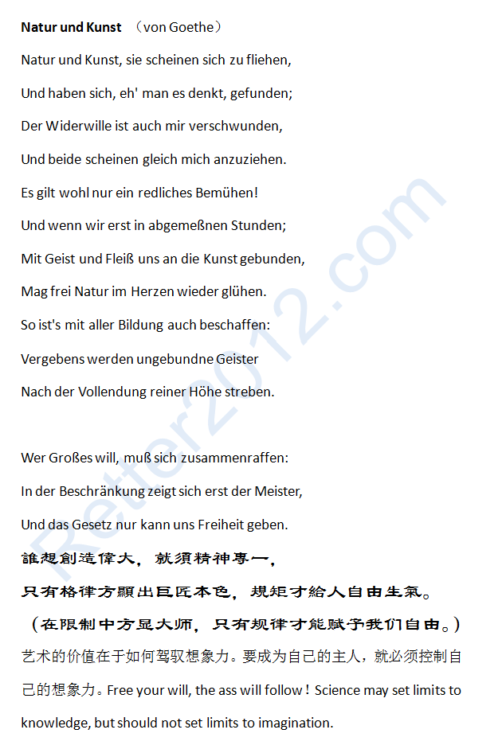

返回主页
诗：Natur und Kunst （von Goethe）

不要误以“手指”为“月亮”。以“手指”指“月亮”，要看的是“月亮”，不是“手指”，“手指”更不是“月亮”。学英语（德语）不是目的，用英语（德语）才是。中国人学外语，是把它奉为学问。外国人仅仅将其作为工具。尽快接触原文，不惮查字典。搞定一句算一句。积累资产。
学外语犹如学游泳。把学生带到游泳池旁，一一推下水去。只要淹不死，游泳就学会了。而淹死的事是绝无仅有的。德语（英语）同字在不同上下文有不同 “意会”，即“用法”。汉译词汇则把字意固定下来，只知其“解法”了。用德语思考，语感！
歌曲：《国际歌》（Die Internationale）
挑战原文：默克尔演讲录音（1）
Volkswagen 2012年报（Vielfalt erfahren）
version:1.0; jobnet@188.com © retter2012.com